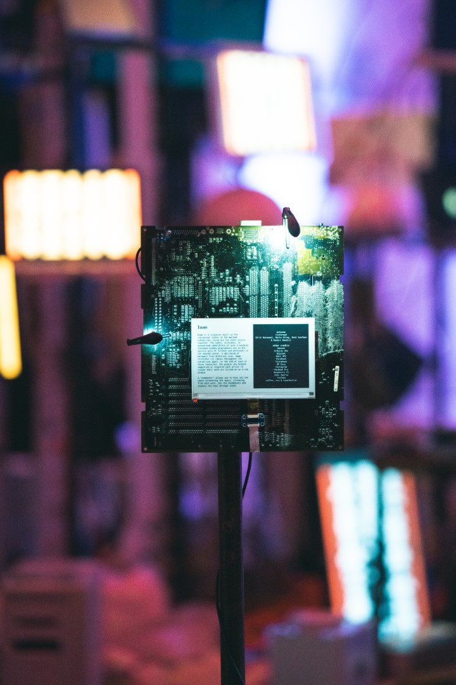
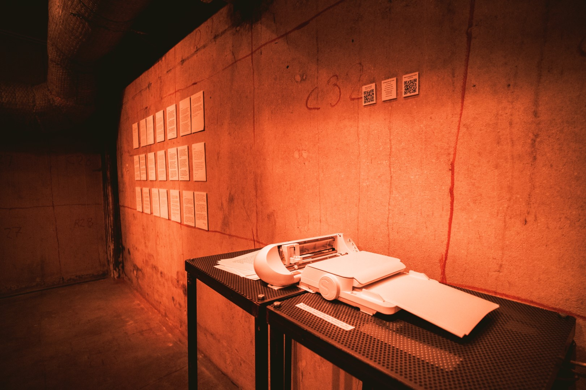

video
footage: Laurie Hedges - editing: Maria Kling
images
Credit for all the following photos: @glidephotos - Martynas Justinevicius (MJ) and Happy Kihlgren (HK).
entering the exhibition (MJ)

e-paper plaque and "nomometer" stand (HK)
viewers wearing "nomometers" (MJ)
loam (MJ)
A not so distant past (MJ)
Apocryph (MJ)

Dear Ai (HK)
loam and Glommen (left: MJ, right: HK)

Glommen, loam and Infinite Sand Sorter (HK)
Infinite Sand Sorter (MJ)
Megatouch (MJ)
Pain Creature performance (MJ)
RELAXRELAXRELAX (MJ)
Why Am I Seeing This? (HK)
under loam (HK)
detail from loam: floppy disks and Commodore 64 (HK)
details from loam: joystick, printout of Linux contributors and Mac tower (MJ)
research paper
The myriad project also led to novel scientific results. We wrote a research paper, in which we introduced Myriad People, an original dataset including the 124 open source projects used in one or more of the exhibited artworks, as well as all the contributors to these projects.
The paper was presented at an international conference on software engineering (Mining Software Repositories 2025, Data and Tool Showcase Track), where it was awarded a FOSS Runner-up Award. Read the pre-print on arXiv.
The dataset was published on Zenodo.